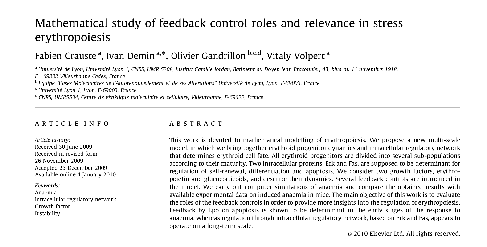

Modéliser l'érythropoïèse à l'aide d'équations différentielles à retard
Crauste et al.
Qu'est ce que l'érythropoïèse ?
- Érythropoïèse : processus de formation des érythrocytes (aussi appelés globules rouges ou hématies).
- Renouvellement journalier : 1% de la quantité totale
- Production de 200 milliards d'érythrocytes par jour
Lieux de l'érythropoïèse
Manuel d'anatomie descriptive du corps humain (1825)
L'érythropoïèse parmi l'hématopoïèse
 Cell Research, 2011
Cell Research, 2011
Stades de différentiation lors de l'érythropoïèse
BFU-E : Burst Forming Unit Erythroid
CFU-E : Colony Forming Unit Erythroid
Régulation de l'érythropoïèse
- Érythropoïétine (EPO), facteur de croissance anti-apoptotique et prolifératif (pour certains progéniteurs seulement)
Régulation de l'érythropoïèse
- Érythropoïétine (EPO), facteur de croissance anti-apoptotique et prolifératif (pour certains progéniteurs seulement)
- Anémie : Diminution de l'hémoglobine circulante en dessous de la valeur normale.
- En cas d'anémie, érythropoïèse de stress. Augmentation de la production d'érythrocytes.
Érythropoïèse de stress (1)
- Érythropoïèse basale (moelle osseuse) peu modifiée, réponse principalement dans la rate
- Augmentation très importante de la concentration d'Epo
- Glucocorticoïdes, facteurs de croissance des progéniteurs en cas d'érythropoïèse de stress
- Implication de Kit/Stem Cell Factor (SCF) et de l'hypoxie
Érythropoïèse de stress (2)

Présentation des auteurs
| Fabien Crauste | Laurent Pujo-Menjouet | Olivier Gandrillon |
 |
 |
Publié dans Journal of Theoretical Biology

Hématocrite suite à une anémie
Hématocrite : pourcentage du volume occupé par les globules rouges par rapport au volume total de sang.
Un modèle compartimenté de l'érythropoïèse
Sous forme d'équations :
$$\frac{\partial{p(t, a)}}{\partial{t}} + \frac{\partial{p(t, a)}}{\partial{a}} = - \beta p(t, a) - \sigma p(t, a)$$
$$\frac{\partial{p_{sr}(t, a)}}{\partial{t}} + \frac{\partial{p_{sr}(t, a)}}{\partial{a}} = - \beta p_{sr}(t, a)$$
$$\frac{\partial{e(t, a)}}{\partial{t}} + \frac{\partial{e(t, a)}}{\partial{a}} = - \gamma e(t, a)$$
avec comme conditions aux limites :
$$p(t, 0) = K + 2 p_{sr}(t, \tau_c)$$ $$p_{sr}(t, 0) = \int_{0}^{\tau_p} \sigma p(t, a) da$$ $$e(t, 0) = A p(t, \tau_p)$$
Densités totales d'érythrocytes et de progéniteurs
On définit respectivement \(E(t)\), \(P(t)\) et \(P_{sr}(t)\) comme les densités totales d'érythrocytes, de progéniteurs et de progéniteurs pouvant s'autorenouveller.
$$E(t) = \int_{0}^{+\infty} e(t, a) da$$
$$P(t) = \int_{0}^{\tau_p} p(t, a) da$$
$$P_{sr}(t) = \int_{0}^{\tau_c} p_{sr}(t, a) da$$
Rétrocontrôles positif et négatif
Une augmentation de la densité des érythrocytes stimule l'apoptose des progéniteurs et inhibe leur l'auto-renouvellement.
$$\beta = \beta(E(t))$$ (taux d'apoptose des progéniteurs)
$$\sigma = \sigma(E(t))$$ (taux de prolifération des progéniteurs)
Réduction à un système d'équations différentielles à retard (1)
$$\frac{dP}{dt}(t) = -[\beta(E(t)) + \sigma(E(t))] P(t)\\ + K + 2 \sigma(E(t - \tau_c)) P(t - \tau_c) \times \mathrm{exp}(\int_{t - \tau_c}^t \beta(E(s)) ds)\\ -[K + 2 \sigma(E(t - \tau_p - \tau_c)) P(t - \tau_p - \tau_c)\\ \times \mathrm{exp}(- \int_{t - \tau_p - \tau_c}^{t - \tau_p} \beta(E(s)) ds)]\\ \times \mathrm{exp}(- \int_{t - \tau_p}^{t} (\beta(E(s)) + \sigma(E(s)) ds))$$Réduction à un système d'équations différentielles à retard (2)
$$\frac{dE}{dt}(t) = - \gamma E(t)\\ + A \ \mathrm{exp}(- \int_{t - \tau_p}^t (\beta(E(s)) + \sigma(E(s))) ds)\\ \times [K + 2 \sigma(E(t - \tau_p - \tau_c)) P(t - \tau_p - \tau_c)\\ \times \mathrm{exp}(- \int_{t - \tau_p - \tau_c}^{t - \tau_p} \beta(E(s)) ds)]$$Modélisation de l'anémie
Équations différentielles à retard : conditions initiales nécessaires entre $\tau_{p}$ et $0$.
Diminution linéaire de la densité d'érythrocytes entre $\tau_{in}$ et $0$. Conditions initiales :
$H_0(t) = H^*\ $ avec $\ t \in [-\tau_p, -\tau_{in}]$
et :
$H_0(t) = \frac{H^* - H_{min}}{\tau_{in}^*}t + H_{min}\ $ pour $\ t \in [-\tau_{in}, 0]$
Simulations sans auto-renouvellement des progéniteurs
$$\beta(E) = \beta_{\infty} \frac{E(t)^n}{E(t)^n + \bar{\beta}^n}$$
Simulations avec auto-renouvellement des progéniteurs
$$\beta(E) = \beta_{\infty} \frac{E(t)^n}{E(t)^n + \bar{\beta}^n}$$
$$\sigma(E) = \sigma_{0} \frac{\bar{\sigma}^m}{\bar{\sigma}^m + E(t)^m}$$
Points forts du modèle
- Nombre de paramètres raisonnable (11)
- Rétrocontrôles du nombre d'érythrocytes sur le nombre de progéniteurs
- Bonne adéquation simulations/expériences
Limites du modèle
- Érythropoïèse basale/de stress ?
- Pas de modélisation explicite de la différenciation cellulaire
- Pas d'informations supplémentaires sur les mécanismes mis en jeux
Vers un modèle multi-échelle
Conclusion
- Auto-renouvellement des progéniteurs essentiel dans le modèle
- Modèle simple de l'érythropoïèse, contrôle des valeurs de paramètres
- Démarche de modélisation des auteurs